Graph Evolution Tool · GET
Design networks by evolving them
GET searches for a graph that performs well on a goal you define. It repeatedly builds candidate networks, measures them, and breeds the better candidates. Use it from Python, a TOML config file, or—when working from the source tree—Rust.
Choose Your Starting Point
Run a small experiment
Build the Python module, evolve a network, and inspect the result.
Getting Started → I want to understand itLearn the ideas first
Graphs, genomes, objectives, selection, variation, and what the loop is doing.
Concepts & Vocabulary → I want to contributeFind the right extension point
Set up the repository, run its checks, and follow the map to the code you need.
Contributor Guide →What GET Does
You supply an experiment: how many nodes the graph has, how candidates are represented, and the number that says whether one graph is better than another. GET handles the evolutionary search.
- 1. Genomea compact recipe
- 2. Graphthe network it builds
- 3. Fitnessyour objective's score
- 4. Evolveselect, change, and repeat
You do not need prior knowledge of evolutionary algorithms or graph theory to begin. The concepts page introduces the terms; the deeper pipeline guide explains the implementation.
What Goes In and What Comes Back
| You provide | GET provides |
|---|---|
| Graph size and optional starting graph | The best graph as weighted edge triples |
| A built-in or custom objective | The winning score and genome representation |
| Population, selection, mutation, and stopping settings | A convergence history for every logged iteration |
| A master seed and number of replicates | Run metadata and saveable results; preserve the code, inputs, and environment too |
An Actual Result

Where GET Fits
You can score a candidate network
Your score might measure epidemic behavior, similarity to reference networks, robustness, cost, or a domain-specific property written in Python or Rust.
What biological meaning is valid
For a gene, protein, metabolic, or contact network, you define what nodes, edges, and a good score mean. GET optimizes that definition; it does not infer biological truth.
Fixed nodes and undirected edges
GET uses integer-indexed, attribute-free graphs with dense storage. Read Data & Inputs before adapting a biological network.
Next Step
If you want a working result, continue to Getting Started or modify the complete files in the Example Bundle. If you already know the package and need a particular interface, use Choose a Route.